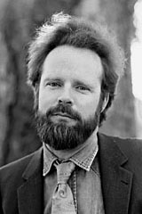

|  |
1978 год Robert W. Floyd (1936–2001) «За его влияние на методологию создания эффективного и надёжного программного обеспечения и за помощь в становлении таких областей компьютерных наук как теория парсинга, семантика языков программирования, автоматическая верификация программ, автоматический синтез программ, и анализ алгоритмов» |
Страна: США
Образование: Бакалавр науки в области физики, Чикагский университет, 1958
О лауреате
Работая в Armour Research Foundation, Floyd заинтересовался компиляторами, которые переводят высокоуровневые языки в машинный код. Он опубликовал статью, в которой описал новую нотацию для системы управления символами, которая может быть использована для создания компиляторов. После он выпустил статью о новом методе считывания арифметических выражений, приводящему к более эффективному машинном коду. Благодаря своим работам, Floyd является самым цитируемым автором в серии книг “TAOCP” (“The Art of Computer Programming”, Donald E. Knuth), в которой он также был главным корректором и критиком. Он является создателем многих важных практических алгоритмов. Наиболее известными из которых являются нахождение кратчайшего пути в ориентированных графах (Floyd–Warshall algorithm), вычисление медианы данных и алгоритм размытия (Floyd-Steinberg algorithm). Кроме того, Floyd работал над проблемой формальной верификации программ, сделав большой вклад в логику Хоара (Hoare logic).
Ключевые слова: Floyd–Warshall algorithm, Floyd–Steinberg dithering, Floyd's cycle-finding algorithm
Краткая библиография
| 1. |
Floyd, R. W. and B. Ebstein, “A formal representation of the interference between several pulse trains” Proceedings of the Fourth Conference on Radio Interference Reduction and Electronic Compatibility, Chicago, 1958, pp. 180-182 Первая статья, которая была опубликована перед получением им бакалаврской степени по физике. |
| 2. |
Floyd, R. W. “An algorithm for coding efficient arithmetic operations,” Communications of the ACM, Vol. 4, Issue 1 (1961), pp. 42-51. В этой статье Floyd продемонстрировал, что считывание арифметических выражений справа налево является лучшим, а также, что для таких элементов, как индексированные переменные, лучшей последовательностью является считывание в разных направлениях. |
| 3. |
Floyd, R. W., “Assigning meanings to programs,” Proceedings of Symposia in Applied Mathematics Vol. 19 (1967), pp. 19-32. Одна из первых попыток разработать способы подтверждения правильности программ, доказательства эквивалентности разделов кода и доказательства того, что программа в конечном итоге остановится. |